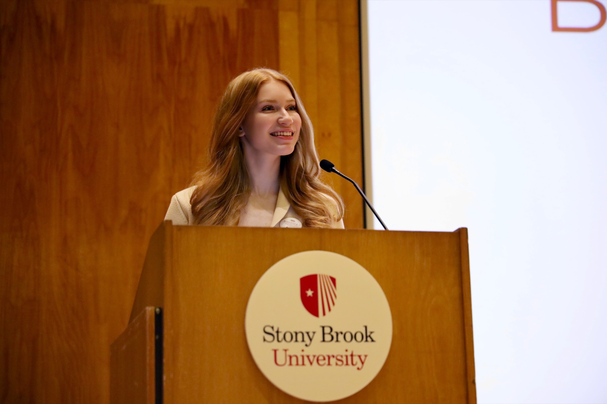

Ava Nederlander
Founder, President & Executive Editor
PhD Candidate in Electrical and Computer Engineering, working under Dr. Arie Kaufman in the Center for Visual Computing. Research focuses on machine learning and AR/VR with medical oncologic surgeries.